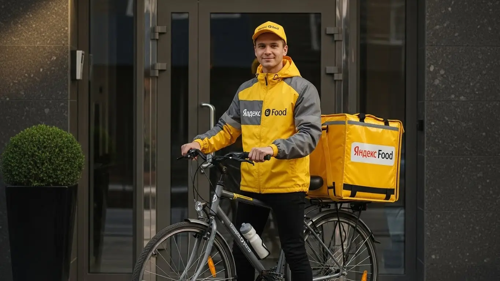
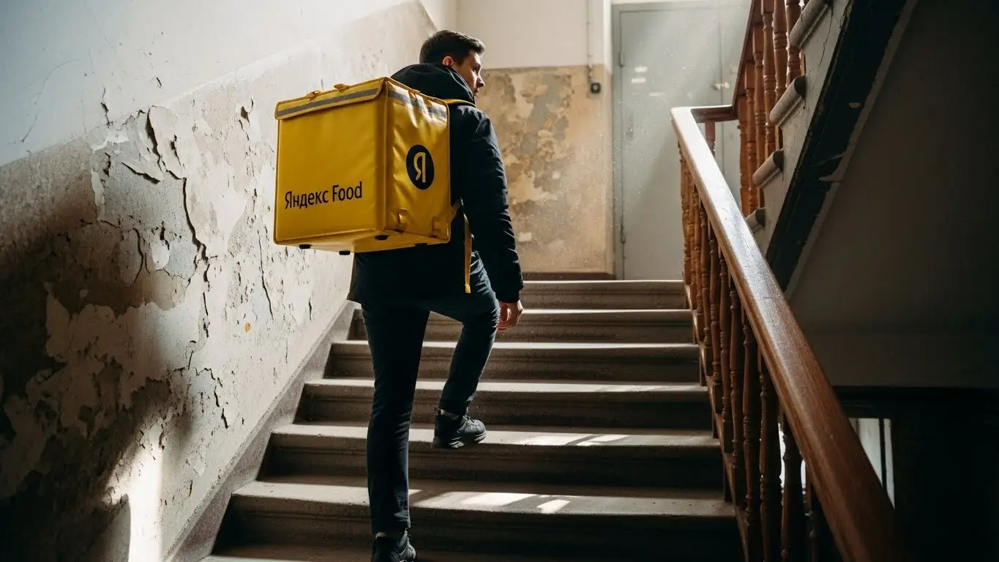

Работа курьером Яндекс Еда в Перми: доход и условия в 2025-2026

- Работа курьером Яндекс Еды в Перме: для кого эта вакансия и что вы получите
- Сколько вы будете зарабатывать курьером в Перме: калькулятор дохода и разбор выплат
- Реальный заработок курьера в Перме: смены и месячный доход
- График работы и форматы занятости
- Требования к кандидату и документы
- Самозанятость, налоги и юридическая чистота
- Пошаговое оформление и первый выход на линию в Перме
- Пешком, на вело или на авто: что выгоднее в Перме
- Районы, маршруты и «топовые» зоны заказов в Перме
- Безопасность, страховка, штрафы и оплата простоя
- Плюсы и возможные минусы работы курьером в Перми
- Реальные истории и отзывы курьеров из Перми
- Ответы на главные вопросы о работе курьером Яндекс Еды в Перме
- Короткие ответы на главные вопросы
- Итоги и ваш следующий шаг
Все города
Думаешь, работа курьером в Перми — это легкие деньги и свободный график? А в голове крутятся вопросы: сколько реально останется в кармане после вычета бензина и налогов? Не убью ли я свою машину или велик на пермских дорогах с вечными ремонтами? И как не стоять часами в пробках где-нибудь на Компросе или у ТРК «Семья», теряя и время, и заказы? Давай начистоту: это не рекламный буклет, а реальный разбор полетов по работе в Яндекс Еде, Лавке и Доставке именно в нашей Перми.
Потому что без понимания местной «кухни» 9 из 10 новичков либо разочаровываются в первый же месяц, либо зарабатывают вдвое меньше, чем могли бы. Никто в рекламе не расскажет тебе, что твой чистый доход — это не цифра в приложении. Это минус расходы на бензин или проезд, минус налог самозанятого, минус амортизация. И уж тем более никто не объяснит, как рейтинг и приоритет влияют на то, получишь ты жирный заказ из центра или поедешь за копейки в отдаленный район вроде Закамска. Если хочешь заранее изучить все детали, на странице про работу курьером Яндекс Еда в Перме есть удобный калькулятор дохода, ответы на частые вопросы и форма для быстрой подачи заявки.
В этом гайде мы всё разложим по полкам. Честно посчитаем, сколько можно заработать в Перми пешком, на велосипеде и на авто в 2025-2026 годах. Разберём лучшие и худшие районы для работы, где спрос выше, а где — глухо. Выясним, как пермская погода — от летнего зноя до зимней каши на дорогах — влияет на заказы и доход. Я покажу на примерах, за что реально штрафуют и как этого избежать. И, конечно, сравним условия с другими доставками, которые работают в городе.
Меня зовут Алексей. Я сам не один год откатал с желтой сумкой по Перми, а сейчас у меня свой небольшой таксопарк-партнер. Я видел эту систему со всех сторон — и как курьер на линии, и как тот, кто помогает ребятам подключаться и решать проблемы. Так что никакой воды и рекламной шелухи не будет, только мясо и реальный опыт. Готов? Тогда давай по порядку, начнем с самого главного — с денег.
Чтобы тебе было проще сориентироваться во всех деталях, я подготовил короткий гид по ключевым темам статьи.
Что ты точно узнаешь из этого разбора
В этой статье ты ТОЧНО узнаешь:
- Сколько реально можно заработать в Перми за смену пешком, на велосипеде и на авто с учётом расходов.
- В каких районах Перми больше всего заказов и в какое время суток выгоднее выходить на линию.
- Как работает система самозанятости, сколько на самом деле придётся платить налогов и как всё оформить за 10 минут.
- Что такое «оплата простоя» и как она защищает твой доход, если заказов в смене оказалось мало.
- За что курьеров штрафуют и понижают в рейтинге, и как этих ошибок избежать новичку.
- Какой транспорт выгоднее для Перми: где лучше ходить пешком, а где без машины не обойтись.
А если тебе некогда читать всю статью — переходи сразу к заключению, где ты найдёшь короткие ответы на все эти вопросы и указания, в каких разделах искать подробности.
А для наглядности — вот основные цифры по работе курьером в Перми.
Работа курьером в Перми: ключевые цифры
Работа курьером Яндекс Еды в Перме: для кого эта вакансия и что вы получите
Кому подойдёт эта работа в Перме
Будем честны: эта работа не для всех, но многим она подходит идеально. В первую очередь, это отличный вариант для студентов пермских вузов и колледжей. График можно подстроить под учёбу, выходить на пару часов после пар и иметь свои деньги на карманные расходы, не прося у родителей. Захотел — поработал, сессия на носу — взял паузу.
Также это хороший старт для тех, у кого нет опыта работы. Здесь не требуют диплом или резюме на три страницы. Нужен только смартфон с приложением Яндекс Про, желание двигаться и умение ориентироваться в городе. Обычно устроиться можно с 18 лет, а в некоторые партнёрские сервисы доставки — даже с 16.
Если ты ищешь подработку к основной зарплате, это тоже твой вариант. Многие мои знакомые таксисты и рабочие с заводов выходят на пару вечеров в неделю или на выходные, чтобы закрыть кредит или накопить на отпуск. И, конечно, это работа для тех, кому важна свобода и быстрые деньги. Ты сам себе начальник, планируешь свой день и получаешь выплаты практически сразу, не дожидаясь аванса неделями.
Главные преимущества для жителей районов Свердловский, Индустриальный, Мотовилихинский
Главный плюс, который многие недооценивают, — возможность работать рядом с домом. Пермь — город большой, и мотаться с одного конца на другой ради смены — то ещё удовольствие. В Яндекс Еде ты можешь выбрать свой район и выполнять заказы, не уезжая далеко.
Например, живёшь ты в Свердловском районе — можешь спокойно работать в районе Комсомольской площади или улицы Героев Хасана, где полно кафе и жилых домов. Обитаешь в Индустриальном — твоя зона это окрестности ТРК «Столица» и шоссе Космонавтов. Для жителей Мотовилихинского района всегда есть заказы в районе площади Дружбы и УДС «Молот». Ты не тратишь время и деньги на дорогу до «офиса», твой офис начинается прямо у твоего подъезда.
Это не только экономит ресурсы, но и сильно упрощает работу. Ты знаешь свои дворы, короткие пути, где можно срезать, а где лучше не соваться в час пик. Работа на знакомой территории всегда эффективнее и прибыльнее, особенно для пеших доставщиков и велокурьеров.

Краткое обещание по доходу и условиям
Если говорить о деньгах в Перми, цифры вполне реальные. При частичной занятости, выходя на 4–5 часов в день, можно спокойно делать 1500–2500 рублей. Если же работать полный день, часов по 8–10, то твой доход за смену может составить и 3000–4500 рублей. Соответственно, за месяц при полной занятости можно выйти на 65 000–90 000 рублей. Это не потолок, активные курьеры зарабатывают и больше.
Ключевые условия просты: свободный график, старт без опыта и ежедневные выплаты на карту. Для получения выплат нужно оформить самозанятость — это обязательное требование, но всё делается онлайн за 15 минут. Для доставки еды также понадобится термокороб, который помогает получить сервис или его партнёры. Никаких сложных собеседований и испытательных сроков.
Вот живой пример: у меня был парень, студент ПГНИУ, жил в Дзержинском районе. Он выходил на велосипеде строго после учёбы, с 16:00 до 20:00. Катал по своему району и центру. Стабильно привозил домой по 1500-2000 рублей за эти 4 часа. Говорил, что это и фитнес, и деньги на жизнь, и не мешает готовиться к семинарам. Главное, по его словам, — не лениться и брать слоты в пиковое время, когда люди возвращаются с работы и заказывают ужин.
В общем, работа курьером в Перми — это гибкий и доступный способ заработка для студентов, людей в поиске подработки или тех, кто хочет быстро начать зарабатывать без опыта. А возможность работать в своём районе делает её ещё удобнее. Мой совет: если нужны деньги и ты не боишься движения, попробуй начать с коротких смен у себя на районе — быстро втянешься и поймёшь, как всё устроено.
Сколько вы будете зарабатывать курьером в Перме: калькулятор дохода и разбор выплат
Из чего складывается доход курьера
Твой заработок — не просто фиксированная ставка, а конструктор из нескольких частей. Понимание этой системы — ключ к хорошему доходу.
Во-первых, есть базовая оплата за каждый выполненный заказ. Она включает в себя подачу в ресторан или магазин, ожидание и вручение посылки клиенту.
Во-вторых, идёт доплата за расстояние. Чем дальше везти заказ, тем больше за него заплатят. Система считает оптимальный маршрут, и каждый километр этого пути добавляет денег в твою копилку. Особенно это выгодно для курьеров на автомобиле, которые берут дальние доставки.
В-третьих, в часы пик (обед, ужин, выходные) и в плохую погоду включаются повышающие коэффициенты. На карте в приложении «Яндекс Про» появляются зоны, окрашенные в разные цвета — чем ярче цвет, тем выше доплата к каждому заказу в этой зоне.
Наконец, существуют бонусы и чаевые. Сервис часто предлагает персональные цели: например, выполни 15 заказов за день и получи бонус 500 рублей. Чаевые полностью твои, они приходят на карту вместе с оплатой заказа. Вежливые и быстрые курьеры в Перми стабильно получают хорошие чаевые. Также сервис может предложить оплату простоя, если заказов в твоём слоте мало.
Как пользоваться калькулятором дохода
На сайте для подключения есть специальный калькулятор. Это не волшебная кнопка «узнать точную зарплату», а инструмент для примерной оценки. Он помогает понять, на какой доход можно рассчитывать в Перми при разных условиях.
Пользоваться им просто. Сначала выбираешь свой город — Пермь. Затем указываешь тип доставки: пеший курьер, на велосипеде или на своём авто. После этого двигаешь ползунки: сколько часов в день и сколько дней в неделю ты планируешь работать. На основе этих данных и средней статистики по городу калькулятор покажет примерный диапазон твоего заработка за день и за месяц. Это поможет сориентироваться и понять, подходит ли тебе такой уровень дохода.
Прикинь свой доход в Перми
Твой примерный доход в месяц:
64 000 ₽
Примерно 3 200 ₽ в день
* Расчёт основан на средней ставке 400 ₽/час для Перми. Реальный доход зависит от спроса, бонусов, чаевых и типа доставки.
Примеры расчёта для пешего, вело- и авто‑курьера в Перме
Разберём на конкретных примерах, чтобы было понятнее.
- Пеший курьер в центре. Допустим, ты работаешь в субботу 6 часов в Ленинском районе, вокруг эспланады и улицы Ленина. Здесь куча ресторанов и плотная застройка. Заказы короткие, но их много. С учётом повышенного спроса в выходной день твой заработок может составить 2000–2800 рублей.
- Велокурьер между спальными районами. Ты выходишь на 8-часовую смену и курсируешь между Свердловским и Индустриальным районами. На велосипеде ты быстрее пешего, можешь брать больше заказов на средние дистанции. За такой день вполне реально заработать 3000–3800 рублей.
- Автокурьер по всему городу. Ты работаешь в дождливый будний день 10 часов. На машине тебе доступны самые дальние и дорогие заказы: из центра в Закамск, с Садового на Гайву. В плохую погоду коэффициенты максимальные. За такую смену можно заработать 4000–5500 рублей и больше, но из этой суммы нужно будет вычесть расходы на бензин.
Эти примеры дают хорошее представление о заработке. Если хочешь посмотреть детальные условия, рассчитать доход точнее и сразу подать заявку, загляни на страницу про работу курьером Яндекс Еда в твоём городе — там есть и калькулятор, и ответы на вопросы, и форма для анкеты.
Вот реальный случай: один из моих водителей, Сергей, любит работать в плохую погоду. В один из дождливых пятничных вечеров он специально поехал в центр, где карта в «Яндекс Про» горела фиолетовым цветом — это максимальный коэффициент. Он брал заказы один за другим, в основном в спальные районы вроде Мотовилихи и Индустриального. За 8 часов работы он сделал больше 5000 рублей чистыми, плюс клиенты щедро накидали чаевых, потому что сами не хотели высовывать нос на улицу. Он просто следовал подсказкам приложения и не боялся работы.
В итоге, твой доход напрямую зависит от твоей активности, выбранного способа передвижения и умения пользоваться инструментами, которые даёт сервис. Твой заработок — не фиксированная зарплата, а результат твоей активности. Мой совет: всегда следи за картой спроса в приложении «Яндекс Про» — это твой главный помощник в увеличении дохода. Работай в пиковые часы, и твой заработок будет заметно выше среднего.
Реальный заработок курьера в Перме: смены и месячный доход
Теперь к главному, без рекламных обещаний. Вопрос, который всех волнует: «Сколько реально можно заработать курьером в Яндексе?». В Перми, как и везде, твой доход — это не фиксированная зарплата, а результат твоей работы. Он зависит от множества условий: как ты двигаешься (пешком, на велосипеде или на авто), сколько часов на линии и насколько грамотно подходишь к делу. Но конкретные цифры я тебе, конечно, дам.
Диапазон дохода для подработки и полной занятости
Если ты ищешь подработку на пару-тройку часов в день после учёбы или основной работы, цифры будут одни. Если же готов работать полный день, то совсем другие. Вот реальные вилки дохода для Перми, на которые можно ориентироваться.
Для подработки (2–4 часа в день):
- Пеший курьер: В среднем 800–1500 рублей за смену. Удобно работать в центре, например, в Ленинском районе, где всё компактно.
- Велокурьер: За счёт скорости выходит больше — 1000–1800 рублей. Отлично подходит для перемещений между соседними районами, вроде Свердловского и Индустриального.
- Курьер на автомобиле: Здесь доход самый высокий, 1500–2500 рублей и выше. Особенно выгодно брать заказы в часы пик или в плохую погоду.
При полной занятости (8–10 часов в день) в месяц выходит уже серьёзная сумма:
- Пеший курьер: 45 000 – 70 000 рублей.
- Велокурьер: 55 000 – 85 000 рублей.
- Курьер на автомобиле: 80 000 – 120 000 рублей («грязными», до вычета расходов на бензин).
Как район, время суток и погода влияют на доход
Запомни три кита, на которых держится твой заработок: место, время и погода. В Перми это работает безотказно. Самые прибыльные часы — это обеденный пик (с 12:00 до 14:00) и вечерний (с 18:00 до 21:00), а также все выходные, начиная с вечера пятницы. В это время заказов вал, и приложение включает повышающие коэффициенты — карта в «Яндекс Про» буквально горит фиолетовым.
Районы тоже решают. В центре, в районе улицы Ленина или Комсомольского проспекта, всегда много заказов из кафе и ресторанов в Яндекс Еде. В спальных районах, таких как Парковый или Садовый, пик спроса смещается на вечер и выходные, когда люди заказывают продукты и ужины домой. А погода — это твой лучший друг. Как только в Перми начинается дождь или снегопад, коэффициенты взлетают до небес. Желающих работать становится меньше, а заказов — в разы больше. Клиенты в такую погоду чаще оставляют чаевые, потому что ценят твой труд.
Советы по увеличению заработка от опытных курьеров
Чтобы зарабатывать больше, не обязательно работать сутками. Нужно работать с головой. Во-первых, всегда планируй смены (слоты) заранее в приложении. Курьеры на плановых слотах получают приоритет в заказах. Старайся бронировать самые выгодные — вечерние и выходные.
Во-вторых, изучай карту спроса. Не сиди на месте в ожидании заказа. Если видишь, что в соседнем квартале горит «фиолетовая зона» с высоким коэффициентом, двигайся туда. Для курьеров на авто совет: не бойся дальних заказов, например, в Закамск или на Гайву. За них хорошо платят, особенно если везёшь несколько заказов в одном направлении. И последний совет: будь вежлив и аккуратен. Хороший рейтинг и положительные отзывы от клиентов — это не только приятно, но и со временем даёт доступ к более выгодным заказам и бонусам.
Расскажу случай из жизни: у меня есть парень, который работает на своей машине по вечерам. В прошлую пятницу, когда лил сильный дождь, он специально вышел на линию в Индустриальном районе. За 4 часа, с 19:00 до 23:00, он сделал 12 заказов. Из-за высокого спроса и доплаты за погоду средняя стоимость заказа была почти в полтора раза выше обычной. В итоге его заработок за вечер составил около 3200 рублей, плюс ему накинули 400 рублей чаевыми. Вывод простой: ловить плохую погоду и пиковые часы — это верный способ хорошо поднять денег.
В общем, твой заработок в Перми — это гибкая система. Чтобы он был стабильно высоким, нужно понимать, где и когда больше всего заказов, и использовать все инструменты, которые даёт сервис Яндекса. Новичкам советую начинать со своего района в вечерние часы — так быстрее освоишься и поймёшь механику работы в доставке.
График работы и форматы занятости
Главный плюс этой работы — свободный график. Ты сам себе начальник и сам решаешь, когда выходить на линию. Никаких планов с девяти до шести и обязательных смен. Это идеальный вариант, если тебе нужна подработка, которую легко совмещать с учёбой или основной работой, но и для полной занятости условия отличные.
Подработка после учёбы или основной работы
Совмещать работу в доставке с другими делами проще простого. Вот пара реальных примеров из жизни пермских курьеров.
Пример первый: студент ПГНИУ, который подрабатывает в Яндекс Доставке, живёт недалеко от кампуса. Учёба у него в основном в первой половине дня. Он выходит на доставки на велосипеде 4–5 раз в неделю по вечерам, примерно с 18:00 до 22:00. В субботу берёт смену подлиннее, часов на 6–8. В итоге его подработка приносит 20-25 тысяч в месяц. На карманные расходы, оплату съёмной комнаты и развлечения хватает с головой.
Пример второй: мужчина 35 лет, работает менеджером в офисе до 18:00. У него есть свой автомобиль в кредит. Чтобы быстрее его закрыть, он три-четыре раза в неделю после основной работы выходит на линию как курьер на автомобиле на 3-4 часа, плюс плотно работает в один из выходных. Катается по своему Свердловскому району и соседним. Такой формат приносит ему дополнительный доход в 30-40 тысяч в месяц, что серьёзно помогает семейному бюджету.
Полная занятость: как выглядит типичный день курьера
Если ты решил сделать доставку в Яндексе своей основной работой, твой день будет выглядеть примерно так. Допустим, ты курьер на велосипеде.
Утром, часов в 10, ты открываешь «Яндекс Про», смотришь карту спроса и выходишь на линию. Начинаешь обычно со своего спального района, например, с Паркового. Доставляешь завтраки, кофе и первые заказы из магазинов. К 12 часам дня смещаешься ближе к центру, в район эспланады и улицы Ленина, — начинается обеденный пик. Заказов много, работаешь в высоком темпе до 15:00.
После обеденного пика наступает небольшое затишье. Можно сделать перерыв, пообедать самому, отдохнуть. С 18:00 начинается вечерний пик — самое прибыльное время. Спрос высокий по всему городу: и в центре, и в спальниках. Работаешь до 22:00, после чего завершаешь смену, смотришь в приложении итоговый заработок за день и едешь домой отдыхать.
Как планировать слоты и выходы через приложение «Яндекс Про»
В приложении «Яндекс Про» есть два режима работы: свободный выход и плановые слоты. Свободный — это когда ты можешь нажать кнопку «На линию» в любой момент и в любом месте. Удобно, но в часы низкого спроса заказов может быть мало.
Плановые слоты — это твой инструмент для стабильного заработка. Ты заранее выбираешь в расписании район и время, в которое будешь работать, например, «Индустриальный район, 18:00–22:00». Забронировав слот, ты получаешь гарантию заказов и приоритет перед теми, кто работает в свободном режиме. Главное — дисциплина. На слот нельзя опаздывать, нужно быть в указанной зоне вовремя. Регулярные опоздания или пропуски снижают твой рейтинг, а высокий рейтинг — это доступ к бонусам и большему числу заказов. Поэтому, если хочешь зарабатывать стабильно, привыкай планировать свою рабочую неделю заранее.
Мой опыт показывает, что новички, которые сначала выходят на линию хаотично, зарабатывают на 30-40% меньше тех, кто сразу начинает пользоваться плановыми слотами. Один студент поначалу жаловался на малое количество заказов. Я посоветовал ему бронировать вечерние слоты в районе своего общежития у Политеха. Результат не заставил себя ждать: за то же количество часов его доход вырос почти вдвое.
В итоге, свободный и гибкий график — это твоё главное преимущество. Но чтобы эта гибкость приносила хороший доход, её нужно сочетать с планированием. Относись к этому как к настоящей работе, даже если это подработка, и тогда результат тебя точно порадует.
Требования к кандидату и документы
Многих пугает слово «требования», сразу представляются какие-то собеседования, дипломы, опыт работы. Забудь. Здесь всё гораздо проще. Главное, что от тебя требуется — это ответственность, умение ориентироваться в городе и наличие смартфона. Никто не будет спрашивать про твоё образование или прошлые заслуги. Важно то, как ты будешь работать здесь и сейчас.
Возраст, гражданство и базовые условия
Начнём с основ. Чтобы стать курьером Яндекс Еды, тебе должно быть полных 18 лет. Это строгое правило, связанное с материальной ответственностью и законодательством. По гражданству тоже есть чёткие рамки: принимают граждан Российской Федерации и стран Евразийского экономического союза (ЕАЭС), куда входят Беларусь, Казахстан, Армения и Кыргызстан.
Что касается физической формы, то сверхспособностей не нужно, но выносливость пригодится. Если ты пеший курьер, будь готов много ходить, особенно в центре Перми, где заказы идут один за другим. Для велокурьера важна способность крутить педали несколько часов подряд. А для курьера на автомобиле главное — уверенное вождение и исправный транспорт. И самое важное для всех — смартфон на базе Android. Приложение «Яндекс Про», через которое ты будешь получать заказы и выплаты, работает только на этой операционной системе.
Какие документы нужны для работы курьером
Пакет документов минимальный, и собрать его можно за один день. Тебе не придётся бегать по инстанциям и стоять в очередях. Вот что нужно подготовить:
- Паспорт. Основной документ, удостоверяющий твою личность. Нужен для оформления договора и регистрации в системе.
- ИНН (Идентификационный номер налогоплательщика). Он необходим для регистрации в качестве самозанятого. Если ты не помнишь свой номер, его можно за пару минут бесплатно узнать на сайте налоговой службы.
- Банковская карта. Нужна твоя личная дебетовая карта любого российского банка. Именно на неё будут приходить ежедневные выплаты. Карта должна быть оформлена на твоё имя.
- Медицинская книжка. Сразу она может и не понадобиться, но я настоятельно рекомендую её оформить. Без медкнижки ты не сможешь доставлять заказы из некоторых ресторанов и продуктовых магазинов, а значит, будешь терять часть потенциального дохода.
Как видишь, список простой. Большинство этих документов и так всегда под рукой. Главное — заранее проверить, всё ли на месте, чтобы процесс оформления прошёл максимально быстро.
Можно ли работать с 16 лет и какие есть альтернативы
Часто спрашивают, можно ли устроиться в Яндекс Еду с 16 или 17 лет. Отвечаю честно: нет, нельзя. Сервис заключает договоры только с совершеннолетними, то есть с 18 лет. Это связано с полной материальной ответственностью за заказы и денежные средства, а также с юридическими тонкостями оформления самозанятости.
Если тебе ещё нет 18, но хочется заработать, не стоит отчаиваться. В Перми есть альтернативные варианты подработки для подростков. Можно, например, раздавать листовки у крупных ТЦ вроде «Семьи» или «Планеты», устроиться помощником в небольшие местные кафе или поискать вакансии на городских порталах, где есть специальные разделы для молодёжи. Это будет хороший опыт, а как только исполнится 18 — сможешь стать курьером.
Был у меня парень, студент-первокурсник ПНИПУ, 18 лет. Пришёл устраиваться, немного переживал из-за документов. Из всего списка у него был только паспорт и карта. Я ему объяснил, что ИНН можно найти на сайте ФНС за две минуты — он тут же сделал это прямо при мне с телефона. Медкнижку парень оформил в течение недели, а до этого просто брал заказы, где она не требовалась. За первую же полную неделю, работая по 4–5 часов после пар, он заработал около 8 тысяч рублей. Это к тому, что бюрократии тут минимум, главное — желание.
В общем, условия работы курьером в Яндекс Еде вполне земные. Основные требования — возраст от 18 лет, гражданство РФ или ЕАЭС и наличие смартфона на Android. Подготовь заранее паспорт, ИНН и банковскую карту, и сможешь выйти на линию очень быстро.
Самозанятость, налоги и юридическая чистота
Многих новичков пугают слова «самозанятость» и «налоги». Кажется, что это сложно, муторно и вообще «государство отберёт половину заработка». На деле всё ровно наоборот. Формат самозанятости — это самый простой и прозрачный способ работать на себя, получая официальный доход и не имея проблем с законом. Давай разберёмся, как это устроено.
Почему курьеры Яндекс Еды работают как самозанятые
Работа через самозанятость (официальное название — налог на профессиональный доход, или НПД) — это обязательное условие и стандарт для курьеров Яндекса. Это не ИП, где нужна сложная отчётность и онлайн-касса. Самозанятость — это упрощённый налоговый режим, созданный специально для тех, кто работает на себя.
Главные плюсы такого формата:
- Легальность и официальный доход. Все твои заработки — «белые». Ты можешь спокойно взять кредит в банке, подтвердить доход для получения визы или просто не переживать, что налоговая однажды спросит, откуда у тебя деньги на карте.
- Простота. Никакой бухгалтерии. Все чеки формируются автоматически, налог рассчитывается сам, отчёты сдавать не нужно. Всё управление происходит в одном приложении.
- Низкая налоговая ставка. Ты платишь всего 6% с доходов, полученных от юридических лиц (в нашем случае — от Яндекса). Это одна из самых низких ставок в стране.
- Прямые отношения с сервисом. Ты работаешь напрямую с платформой, без лишних посредников в виде парков, которые могут брать дополнительную комиссию.
По сути, самозанятость — это твоя юридическая защита и финансовая прозрачность. Ты работаешь честно, и сервис работает с тобой честно.
Как за 10 минут оформить самозанятость через «Мой налог»
Регистрация статуса самозанятого занимает меньше времени, чем перерыв на кофе. Всё делается онлайн, никуда ходить не нужно. Вот простая пошаговая инструкция:
- Скачай приложение. Зайди в Google Play на своём Android-смартфоне и скачай официальное приложение ФНС России — «Мой налог».
- Начни регистрацию. Открой приложение и выбери самый простой способ — «Регистрация по паспорту РФ».
- Отсканируй паспорт. Наведи камеру телефона на главный разворот паспорта (где фотография). Приложение само распознает все данные. Проверь, чтобы всё было верно.
- Сделай фото. Дальше приложение попросит тебя сделать селфи. Это нужно для подтверждения личности, чтобы система сравнила твоё лицо с фото в паспорте.
- Подтверди регистрацию. Выбери регион деятельности — Пермский край. После этого нажми кнопку подтверждения. Всё, через несколько минут тебе придёт уведомление, что ты официально стал плательщиком налога на профессиональный доход.
Весь процесс интуитивно понятен и действительно занимает 5–10 минут. После этого ты можешь привязывать свой статус в приложении «Яндекс Про» и начинать работать.
Сколько и как платить налоги
Теперь о самом главном — о деньгах. Как самозанятый курьер, ты платишь налог в размере 6% от своего дохода. Этот доход — это все деньги, которые ты получаешь от Яндекса за выполненные заказы.
Процесс уплаты налога максимально автоматизирован и не требует от тебя никаких усилий:
- Яндекс сам передаёт информацию о твоих выплатах в налоговую службу.
- До 12-го числа каждого месяца, следующего за отчётным, в приложении «Мой налог» автоматически формируется квитанция с суммой налога. Например, налог за работу в мае появится до 12 июня.
- Тебе приходит уведомление. Ты заходишь в приложение, видишь сумму, привязываешь свою банковскую карту и нажимаешь кнопку «Оплатить».
Оплатить налог нужно до 28-го числа того же месяца. Никаких деклараций, расчётов вручную — всё делается за тебя. Это гораздо проще и безопаснее, чем получать деньги «в конверте» и постоянно рисковать.
У меня есть знакомый, мужчина лет 35, раньше работал на стройках в Перми, получал всё наличкой. Когда он решил попробовать себя в доставке, то очень скептически отнёсся к самозанятости, боялся налогов и проверок. Я его убедил попробовать. За первый месяц он заработал около 50 000 рублей. В следующем месяце ему в приложении пришла квитанция на 3000 рублей (6% от 50к). Он оплатил её одной кнопкой и был в шоке, насколько это просто. Сказал, что это несравнимо с постоянным стрессом от «серой» работы.
Итак, самозанятость — это не страшно, а выгодно и удобно. Регистрация занимает 10 минут, налог низкий, а весь процесс уплаты автоматизирован. Такое официальное оформление даёт тебе статус работающего человека со всеми вытекающими плюсами. Мой совет: не ищи обходных путей, делай всё по закону — так спокойнее и надёжнее.
Пошаговое оформление и первый выход на линию в Перме
Шаг 1–2: анкета и онлайн‑обучение
Многие думают, что устроиться на работу курьером — это долго и сложно, с кучей бумаг. На деле всё гораздо проще, и для старта не нужен опыт. Первый шаг, чтобы стать курьером Яндекс Еды, — заполнение короткой анкеты на сайте: имя, фамилия, телефон и город. Никаких резюме и собеседований. После этого система проверит ваши данные, что обычно занимает немного времени.
Как только проверка пройдена, тебе откроется доступ к онлайн-обучению. Это несколько коротких видео и текстов прямо в телефоне, которые объясняют основы: как пользоваться приложением «Яндекс Про», стандарты общения с клиентами и ресторанами, правила безопасности. В конце — небольшой тест, чтобы убедиться, что ты всё понял. Весь процесс от анкеты до конца обучения можно пройти за час-полтора, не выходя из дома.
Шаг 3: получение сумки и доступа к заказам в Перме
После успешного обучения остаётся получить главный рабочий инструмент — фирменную термосумку или термокороб. В Перми для этого есть специальные курьерские центры и офисы партнёров сервиса. Искать ничего не придётся: как только твой аккаунт будет готов, в приложении «Яндекс Про» появится карта с точными адресами ближайших точек выдачи.
Ты просто выбираешь удобный адрес, приезжаешь в назначенное время и забираешь экипировку. После этого твой профиль полностью активируют, и ты получаешь доступ к заказам. Иногда партнёры даже предлагают доставку сумки на дом, что ещё больше упрощает процесс.
Шаг 4: первый слот и первый доход
С активным аккаунтом и сумкой ты готов к работе. Чтобы начать зарабатывать, открой «Яндекс Про» и выбери на карте города район и свободный временной слот. Слоты — это основа свободного графика: ты сам решаешь, когда доставлять заказы, например, с 17:00 до 21:00. Для первого раза я настоятельно рекомендую выбрать свой район, где ты знаешь каждый двор и подъезд — так будет гораздо спокойнее.
Выбрав слот, нажимаешь кнопку «На линию» и ждёшь свой первый заказ. Как только ты его выполнишь, деньги сразу поступят на баланс в приложении. Сервис предлагает ежедневные выплаты — заработок можно выводить на банковскую карту хоть каждый день. По сути, ты можешь утром заполнить анкету, а вечером уже получить свой первый доход.
Например, один мой знакомый решил попробовать такую подработку. В 10 утра он отправил заявку, к обеду закончил онлайн-обучение. После этого съездил в курьерский центр на Героев Хасана за термокоробом. Вечером того же дня вышел на свой первый 4-часовой слот в родном Индустриальном районе. Спокойно, без спешки, выполнил 8 заказов и заработал около 1300 рублей. Главное, по его словам, было не нервничать и внимательно следовать подсказкам навигатора в приложении.
В итоге, весь путь от желания подработать до реальных денег занимает всего несколько часов. Условия работы в Яндекс Еде созданы так, чтобы убрать лишнюю бюрократию и дать человеку возможность быстро стартовать. Мой совет новичку: не откладывай обучение на потом, пройди его сразу. А на первую смену выходи в хорошо знакомом квартале — это снимет 90% стресса и позволит сосредоточиться на доставке.
Пешком, на вело или на авто: что выгоднее в Перме
Пеший курьер: для центра и плотной застройки в Перме
Живёшь в центре Перми или рядом? Формат пешего курьера — твой идеальный вариант. В Ленинском районе, особенно в квадрате улиц Ленина, Сибирской, Попова и на Комсомольском проспекте, сосредоточено огромное количество кафе и ресторанов Яндекс Еды. Расстояния между точками здесь небольшие, часто всего 500–800 метров. На машине в этих местах днём можно намертво встать в пробке, а пешком ты срезал через эспланаду или дворы — и уже у клиента.
Заказы в центре короткие, но их очень много, особенно в обеденное время и по вечерам. Для пешего курьера это означает стабильный поток доставок без серьёзных затрат. Тебе не нужно платить за бензин или проезд, главное — удобная обувь и готовность много ходить. Это отличный старт для подработки без вложений.
Велокурьер: быстрые доставки между спальными районами
Велосипед — золотая середина для работы курьером в крупных спальных районах Перми, таких как Свердловский или Мотовилихинский. Здесь расстояния между домами и заведениями уже больше, пешком идти долго, а на машине можно потерять время на светофорах или в поисках парковки у многоэтажек. Курьер на велосипеде решает эти проблемы: он быстрый, маневренный и не зависит от пробок.
Этот формат позволяет велокурьеру эффективно покрывать заказы на 2–5 километров, быстро перемещаясь между микрорайонами. По сути, это оплачиваемый фитнес: ты и деньги зарабатываешь, и поддерживаешь себя в форме. Единственное, что стоит учесть — пермский рельеф. В той же Мотовилихе хватает крутых подъёмов, так что определённая физическая подготовка не помешает.
Водитель‑курьер: заказы по всему городу и пригороду Кондратово, Фролы
Работа курьером на своем авто — это инструмент для максимального заработка. С машиной тебе доступны самые дорогие заказы: доставка на большие расстояния между разными концами города (например, с Садового в Закамск), мультизаказы (когда везёшь сразу несколько посылок в одном направлении) и работа в пригородах, таких как Кондратово, Фролы или Ферма.
Особенно выгодно работать водителем-курьером в плохую погоду. Когда в Перми идёт дождь или сильный снегопад, количество заказов резко растёт, а повышающие коэффициенты взлетают до небес. Пеших и велокурьеров на линии становится меньше, и водители забирают самые сливки. Да, есть расходы на бензин и амортизацию, но высокий доход в пиковые часы их с лихвой перекрывает.
Сравнение форматов доставки в Перми
| Параметр | Пеший курьер | Велокурьер | Водитель-курьер |
|---|---|---|---|
| Лучшие районы | Центр (Ленинский район), плотная застройка | Спальные районы (Свердловский, Мотовилихинский) | Весь город, дальние районы (Закамск, Гайва), пригороды |
| Средний доход в час | 250–400 ₽ | 350–550 ₽ | 500–800 ₽ (до вычета расходов) |
| Расходы | Минимальные (удобная обувь) | Обслуживание велосипеда | Бензин, амортизация, страховка |
| Главный плюс | Нет затрат, полезно для здоровья | Скорость, маневренность, экономия | Комфорт, самые дорогие заказы, работа в любую погоду |
Например, один из водителей в моём парке, Сергей, использует машину для подработки. В будни после основной работы он выходит на 4-часовой слот и катается по своему Индустриальному району и соседним. А в субботу, особенно если погода портится, он целенаправленно берёт длинную 8-часовую смену и ловит заказы по всему городу, включая дальние районы. За такой день он может привезти 5–7 тысяч рублей «грязными», из которых около тысячи уходит на бензин. Ему нравится, что он сам решает, когда и где ему выгоднее работать.
В конечном счёте, выбор транспорта зависит от твоих целей, района проживания и готовности к расходам. Для старта или неспешной подработки в центре Перми достаточно своих ног. Если хочешь быть быстрее и работать в спальном районе — велосипед станет отличным помощником. А если нацелен на максимальный доход и готов работать по всему городу — без своего авто не обойтись. Мой совет: не нужно сразу вкладываться в дорогой велосипед или жечь бензин. Начни с того, что у тебя уже есть, попробуй, и сам поймёшь, какой формат работы курьером тебе подходит больше.
Районы, маршруты и «топовые» зоны заказов в Перме
Знание города — твой главный козырь. Можно быть самым быстрым курьером, но если ты не понимаешь, где и когда концентрируются заказы, будешь зарабатывать меньше. В Перми, как и в любом крупном городе, есть свои «рыбные места» и часы пик. Главное — научиться читать карту спроса в приложении и не гоняться за каждым заказом через весь город, а работать точечно.
Грамотное планирование маршрутов напрямую влияет на твой итоговый доход. Одно дело — намотать 100 км за смену и привезти 3000 рублей, а совсем другое — проехать 50 км и заработать те же деньги. Разница — в твоём кармане, особенно если ты работаешь на своем авто. Поэтому давай разберёмся, где в Перми деньги лежат буквально на асфальте.
Где больше всего заказов: ТРЦ, бизнес‑центры и туристические места
Самый стабильный поток заказов всегда там, где много людей и денег. В Перми это, в первую очередь, крупные торговые и деловые центры. Запомни эти точки: ТРЦ «Планета» на шоссе Космонавтов, ТРК «СемьЯ» на Революции и iMall «Эспланада» в самом центре. Здесь сосредоточены фуд-корты, рестораны и магазины, которые генерируют заказы для курьеров Яндекс Еды с утра до позднего вечера, особенно в выходные.
Второй источник — деловые кварталы. В будни с 11:00 до 15:00 центр города, особенно районы Комсомольского проспекта, улиц Ленина и Попова, превращается в одну большую зону повышенного спроса. Офисные работники заказывают бизнес-ланчи, и коэффициенты в это время часто взлетают. Вечером и в выходные хорошо «стреляют» туристические и прогулочные зоны: набережная Камы, улица Сибирская, район Театра-Театра. Люди отдыхают и активно заказывают еду.
Работа в своём районе: примеры для популярных жилых кварталов
Не думай, что зарабатывать можно только в центре. Работать в своём районе часто бывает даже выгоднее: ты экономишь время и деньги на дорогу до «топовой» зоны и отлично знаешь все дворы и подъезды. В крупных спальных районах Перми, таких как Садовый, Парковый или Закамск, полно своих точек притяжения: локальные кафе, пиццерии, суши-бары и магазины.
Например, живя на Парковом, ты можешь спокойно брать заказы из местных заведений и развозить их в радиусе нескольких километров. Заказов здесь может быть чуть меньше, чем в центре, но и расстояния доставки короче. В итоге за час ты можешь выполнить 3-4 коротких заказа, вместо того чтобы тащиться с одним заказом из центра на окраину. Это идеальный вариант для пеших и велокурьеров, а также для тех, кто ищет подработку на несколько часов в день.
Как выбирать зоны и слоты в «Яндекс Про», чтобы не мотаться впустую
Приложение «Яндекс Про» — твой основной инструмент планирования. Главное, на что нужно смотреть, — это карта спроса. Зоны, окрашенные в фиолетовый и красный цвета, показывают, где заказов сейчас больше всего и действуют повышающие коэффициенты. Перед началом смены всегда проверяй карту и старайся начинать работу именно в таких «горящих» зонах.
Не гоняйся за каждым «фиолетовым» пятном на другом конце города. Оцени расстояние и время. Иногда выгоднее остаться в своей зоне со стабильным потоком заказов по стандартному тарифу, чем потратить 30 минут и бензин на дорогу ради одного заказа с высоким коэффициентом. Используй плановые слоты: выбирая слот в определённой зоне заранее, ты бронируешь себе место там, где ожидается высокий спрос. Это надёжнее, чем выходить на свободный слот и надеяться на удачу.
Вот хороший пример из жизни. Был у меня парень-автокурьер, который в первые недели гонялся за каждым «жирным» заказом по всей Перми. В итоге за 8-часовую смену проезжал по 150 км, а чистыми оставалось немного. Я посоветовал ему сконцентрироваться на одном-двух соседних районах, например, на Индустриальном и Свердловском. Он стал базироваться у ТРЦ «Планета» днём, а вечером развозил заказы по спальникам Нагорного. Пробег сократился до 70-80 км, а чистый доход за смену вырос почти на четверть.
В общем, ключ к хорошему заработку — это не столько скорость, сколько стратегия. Анализируй карту, выбирай зоны с умом и не трать ресурсы впустую. Лучше сделать три коротких заказа в своём районе, чем один длинный через весь город по пробкам.
Безопасность, страховка, штрафы и оплата простоя
Работа курьером, как и любая другая, связана с правилами и рисками. Ты постоянно в движении, на дороге, общаешься с разными людьми. Важно понимать, что сервис заинтересован в твоей безопасности и стабильности не меньше, чем ты сам. Поэтому существуют чёткие условия работы: от бесплатной страховки до оплаты времени, когда заказов нет. Но и с тебя спрос тоже есть — за качество сервиса и соблюдение правил.
Давай разберём, что тебя защищает, за что могут наказать и как избежать неприятных ситуаций. Это не страшилки, а рабочие моменты, которые нужно просто знать и учитывать.
Бесплатная страховка на сменах и что она покрывает
Главное, что нужно знать: как только ты выходишь на линию (на плановый или свободный слот), твоя жизнь и здоровье автоматически страхуются. За это не нужно ничего платить, всё происходит само. Эта страховка — твоя подушка безопасности на случай непредвиденных ситуаций во время доставки.
Что она покрывает? Травмы, полученные во время выполнения заказа. Например, если ты велокурьер и упал, сломав руку, или попал в небольшое ДТП на машине. Страховая выплата поможет покрыть расходы на лечение. Суммы покрытия серьёзные, до 2 миллионов рублей, в зависимости от тяжести случая. Это важный момент, который показывает, что ты не остаёшься один на один с проблемой, если что-то пойдёт не так.
Правила безопасности на дороге и при доставке
Здесь всё просто и основано на здравом смысле. Для пешего курьера главное — смотреть по сторонам, переходить дорогу по «зебре» и быть заметным в тёмное время суток. Купи себе светоотражающие элементы на одежду или рюкзак, это копейки, но может спасти жизнь. Велокурьерам настоятельно советую ездить в шлеме и использовать фонари ночью. Помни, ты — полноценный участник движения.
Для водителей-курьеров правила стандартные: не нарушай ПДД, не гони, чтобы успеть на заказ на 2 минуты раньше, и паркуйся аккуратно, не перекрывая выезды. В плохую погоду — дождь, гололёд, снегопад, которые в Перми не редкость, — сбавляй скорость вдвойне. И общее для всех: аккуратно обращайся с заказом. Проверь, хорошо ли закрыты стаканы с кофе, не перевернётся ли пицца в термокоробе. Это тоже часть безопасности — безопасности твоего рейтинга и чаевых.
Какие бывают штрафы и как их избежать
Да, штрафы или, как их ещё называют, депремирование, в системе есть. Но их цель — не отобрать у тебя деньги, а поддерживать качество сервиса на высоком уровне. Никто не будет наказывать за случайное опоздание на 5 минут из-за пробки. Речь идёт о систематических или грубых нарушениях.
Основные причины, по которым могут понизить рейтинг или применить штраф: грубость клиенту или сотруднику ресторана, порча заказа (например, привёз помятую коробку с тортом), регулярные опоздания на точки без уважительной причины, отмена уже принятого заказа. Самый простой способ всего этого избежать — работать на совесть. Будь вежлив, обращайся с заказами аккуратно, если понимаешь, что опаздываешь, — сообщи в поддержку. Человеческий фактор все понимают, а вот наплевательское отношение — нет.
Что такое оплата простоя и как она защищает ваш доход
Это одна из ключевых фишек, которая выгодно отличает условия работы в Яндекс Еде. «Оплата простоя» или гарантия минимального дохода — это твоя защита от ситуаций, когда ты вышел на плановый слот, находишься в нужной зоне, а заказов мало. Ты не будешь сидеть час бесплатно в ожидании заказа.
Работает это так: для плановых слотов есть гарантированная минимальная ставка в час. Если за этот час ты выполнил заказы на сумму меньше этой гарантии, сервис доплатит тебе разницу. Например, гарантия в твоём слоте — 350 рублей в час. А ты выполнил только один заказ на 200 рублей. В конце часа система автоматически начислит тебе ещё 150 рублей. Это даёт уверенность, что твоё время будет оплачено, и позволяет планировать доход более точно.
Был у меня случай с новичком. Он взял слот в будний день после обеда, спрос был невысокий. За два часа он получил всего пару заказов и уже начал паниковать, что зря потратил время. А потом увидел в отчёте доплату за простой, которая покрыла почти половину его заработка за этот слот. Это его здорово успокоило и мотивировало работать дальше.
Итак, твоя работа защищена: страховка покрывает риски для здоровья, правила помогают избежать проблем, а оплата простоя гарантирует доход. Главное — подходить к работе ответственно. Если возникла любая проблема — ДТП, конфликт, испорченный заказ — не пытайся решить её в одиночку, сразу пиши в службу поддержки. Они для того и существуют, чтобы помогать.
Плюсы и возможные минусы работы курьером в Перми
Любая работа — это компромисс. Где-то платят хорошо, но график жёсткий. Где-то коллектив отличный, но добираться два часа. Условия работы курьером в Перми — не исключение. Здесь есть свои весомые плюсы, которые привлекают многих, но и минусы, о которых лучше знать заранее, чтобы потом не было сюрпризов. Моя задача — честно разложить всё по полочкам, чтобы ты понимал, на что идёшь.
Сильные стороны работы курьером в Перме
Начнём с хорошего. Причин, по которым парни и девчата выбирают эту работу, несколько, и они довольно весомые. Во-первых, это гибкий график. Ты сам решаешь, когда выходить на линию и на сколько. Можно отработать пару часов после основной работы или учёбы, а можно выходить на полную смену. Никто не стоит над душой с табелем учёта рабочего времени.
Во-вторых, ежедневные выплаты. Это, пожалуй, один из главных козырей. Заработал сегодня — получил выплаты на карту сегодня или на следующий день. Не нужно ждать аванса и зарплаты неделями. Это очень удобно, когда срочно нужны деньги или просто хочешь контролировать свой бюджет в реальном времени. Кроме того, ты работаешь рядом с домом. В приложении можно выбрать удобный район, например, стартовать из своего Индустриального района или Мотовилихи и не тратить время и деньги на дорогу через весь город.
Наконец, это не просто «беготня с сумкой». Ты получаешь поддержку и страховку. Если что-то пошло не так с заказом или на маршруте, есть круглосуточная поддержка в приложении Яндекс Про. Плюс, на время выполнения заказов действует бесплатная страховка жизни и здоровья. И самое важное — всё легально. Ты работаешь как самозанятый, получаешь официальные выплаты, платишь небольшой налог для самозанятых и спишь спокойно.
С какими сложностями чаще всего сталкиваются курьеры
Теперь о том, к чему нужно быть готовым. Первая и главная сложность — физическая нагрузка. Если ты пеший курьер или курьер на велосипеде, будь готов много ходить или крутить педали. Поначалу ноги будут гудеть, особенно если до этого вёл сидячий образ жизни. Совет простой: начинай с коротких смен по 3-4 часа и носи удобную обувь. Для курьеров на авто нагрузка другая — постоянное внимание на дороге, пробки, поиск парковки.
Вторая пермская реальность — работа в плохую погоду. Наш уральский климат не балует: то дождь со снегом в октябре, то морозы зимой, то летний ливень. Работать в таких условиях — то ещё удовольствие. Но есть и обратная сторона: в плохую погоду заказов всегда больше, действуют повышенные коэффициенты, и клиенты чаще оставляют чаевые. Главное — правильно одеться: непромокаемая куртка, тёплая обувь, перчатки и фирменная термосумка решают 90% проблем.
Иногда случаются простои, когда заказов мало. Такое бывает в определённые часы, например, в середине буднего дня. Чтобы не стоять без дела, лучше выбирать зоны с высоким спросом — это центры деловой активности или крупные ТРК вроде «Планеты». К тому же, в Яндекс Еде есть частичная компенсация за ожидание заказа, что немного сглаживает такие моменты. Ну и, конечно, общение с разными клиентами. Большинство людей адекватны, но изредка попадаются и недовольные. Правило одно: сохраняй спокойствие, будь вежлив и в случае конфликта сразу пиши в поддержку.
Кому такая работа подходит, а кому лучше поискать другой формат
Скажу прямо. Эта работа идеально подходит, если ты студент и тебе нужно совмещать с учёбой. Это отличная подработка для тех, у кого есть основная работа, но хочется иметь дополнительный доход по вечерам или выходным. Если ты активный человек, не любишь сидеть на одном месте и хочешь превратить движение в деньги — это твой вариант. Также это отличный старт для тех, кто ищет вакансии без опыта работы, но есть желание зарабатывать.
С другой стороны, эта работа вряд ли тебе подойдёт, если ты ищешь стабильный оклад до копейки, который не зависит от твоей активности. Если ты не выносишь физических нагрузок или плохой погоды, лучше поискать что-то в помещении. Тем, кто не отличается самодисциплиной, тоже будет сложно: здесь нет начальника, который будет тебя подгонять, нужно самому себя мотивировать выходить на линию. Если комфорт офисного кресла для тебя превыше всего, курьерская работа — точно не твоя история.
Вот реальный кейс. Парень, 25 лет, работал на машине. Решил подработать в пятницу вечером после основной смены. Выбрал зону вокруг ТРК «Семья» и ближайшие кварталы Свердловского района. За 4 часа с 18:00 до 22:00 выполнил 11 заказов, в основном из ресторанов и один большой из супермаркета. Его чистый доход за смену составил около 2100 рублей, за вычетом бензина. Его вывод: в пиковые часы на авто можно делать хорошие деньги, главное — не лезть в глухие пробки в центре, а работать по крупным магистралям и спальным районам.
В сухом остатке: работа курьером даёт свободу и быстрые деньги, но требует физической выносливости и готовности к разным условиям. Прежде чем начинать, честно оцени свои силы и приоритеты. Если ты готов к движению и ценишь гибкость, то сможешь хорошо зарабатывать.
Реальные истории и отзывы курьеров из Перми
Цифры и условия — это одно, а живой опыт — другое. Я пообщался с несколькими ребятами, которые работают курьерами в Перми, чтобы ты увидел картину их глазами. Это не выдуманные истории, а реальные отзывы сотрудников.
История студента ПГНИУ, который совмещает учёбу и доставку
«Меня зовут Кирилл, я учусь на третьем курсе в Пермском госуниверситете (ПГНИУ). Живу в общежитии в Дзержинском районе, поэтому начинаю работать прямо оттуда. Работаю как велокурьер — это и быстрее, и для здоровья полезно. Обычно мой день выглядит так: до обеда пары, потом обедаю, пару часов отдыхаю и выхожу на слот с 16:00 до 21:00.
Работаю в основном в центре, в Ленинском и Свердловском районах, там всегда много заказов из кафе и ресторанов. За вечер успеваю сделать 10-15 доставок. В среднем за неделю, если выходить 4-5 раз, мой заработок составляет 9-12 тысяч рублей. Этих денег мне с головой хватает на личные расходы, чтобы не просить у родителей. Главный плюс для меня — я сам строю свой график и не пропускаю учёбу».
Опыт автокурьера, который выходит в пиковые часы
«Я работаю инженером, график стандартный, с девяти до шести. Машина чаще всего стоит на парковке. Решил, что она должна приносить деньги, а не только требовать их. Поэтому несколько раз в неделю выхожу на линию как автокурьер Яндекс Еды. Мои любимые слоты — вечерний час пик с 18:00 до 22:00 и выходные дни.
На машине я берусь за дальние заказы, которые пешим невыгодны: например, отвезти несколько больших пакетов из „Ленты“ на Парковом в Закамск. В плохую погоду — дождь или снегопад — спрос взлетает, и доход за час может быть в 1.5-2 раза выше обычного. Эта подработка приносит мне дополнительно 20-25 тысяч в месяц, что является отличной прибавкой к основной зарплате».
Отзыв велокурьера о работе в центре и спальниках
«Я Аня, работаю велокурьером уже полгода. Попробовала разные районы Перми и могу сказать, что везде своя специфика. В центре, например, на Компросе или улице Ленина, заказы сыплются один за другим. Дистанции короткие, можно сделать много доставок за час. Но минус — постоянное движение, толпы людей, нужно быть очень внимательным.
А вот в спальных районах, вроде Садового или Юбилейного, работа спокойнее. Заказы в основном из местных пиццерий и магазинов в соседние дома. Расстояния чуть больше, но нет такой суеты. Мне нравится чередовать: в будни днём я в центре, а по вечерам и в выходные — в своём районе. Привыкнуть пришлось к пермским горкам, особенно в Мотовилихе, но со временем это стало просто хорошей тренировкой».
В итоге, каждый находит свой формат и свои «рыбные» места. Кто-то любит динамику центра, кто-то — спокойствие спальных районов. Главное, что работа в сервисах Яндекса, будь то Еда или Доставка, даёт возможность подстроиться под свой ритм жизни и цели, будь то подработка для студента или дополнительный доход для семейного человека.
Ответы на главные вопросы о работе курьером Яндекс Еды в Перме
Собрал здесь ответы на вопросы, которые мне задают чаще всего. Разберём все условия по-честному, чтобы у тебя не осталось сомнений и «белых пятен».
Ответы на ключевые вопросы кандидатов
- Нужно ли оформлять самозанятость и как платить налоги?
Да, обязательно. Работа курьером в Яндекс Еде — это официальная деятельность, и самый простой способ её вести — через статус самозанятого (НПД). Не пугайся, это несложно: всё оформляется за 10 минут через приложение «Мой налог». Ты просто привязываешь карту, и налог в 6% с дохода от Яндекса будет рассчитываться и списываться автоматически. Никакой бухгалтерии, отчётов и походов в налоговую. Это гораздо надёжнее, чем работать в серую и переживать из-за переводов на карту.
- Какой телефон и интернет нужны для работы курьером?
Твой главный инструмент — смартфон на базе Android версии 7.0 или новее. На айфонах приложение «Яндекс Про» для курьеров не работает, имей это в виду. Телефон должен уверенно держать зарядку, иметь стабильный мобильный интернет (лучше 4G) и исправно работающий GPS-модуль, иначе будешь плутать. Полезный совет: сразу купи пауэрбанк, потому что с постоянно включённым экраном и навигатором батарея тает на глазах.
- Нужна ли медицинская книжка для работы?
Сразу при оформлении она может и не понадобиться. Но я настоятельно советую её сделать как можно скорее. Без медкнижки тебе будет недоступна часть заказов, например, из некоторых ресторанов и всех продуктовых магазинов. По сути, без неё ты сам себе ограничиваешь потенциальный доход. Оформляется она быстро, а пользы приносит много.
- Что будет, если в смену мало заказов — как работает оплата простоя?
Это одна из ключевых фишек Яндекса, которая защищает твой доход. Если ты вышел на запланированный слот и находишься в указанной зоне, но заказов объективно мало, ты не будешь сидеть бесплатно. Сервис начисляет гарантированную минимальную оплату за час. Это и есть «оплата простоя». Она страхует от ситуаций, когда в какой-то день спрос ниже обычного. В других сервисах такого часто нет: нет заказов — нет денег.
- Есть ли в Яндекс Еде штрафы и за что их могут применить?
Система штрафов есть, но она направлена на поддержание качества сервиса, а не на то, чтобы отобрать у тебя деньги. Штрафы применяют за серьёзные нарушения: регулярные опоздания на слоты, порчу заказа, откровенную грубость клиенту или сотруднику ресторана, отмену уже принятого заказа без веской причины. Если ты работаешь добросовестно, вежливо общаешься и аккуратно доставляешь заказы, то со штрафами, скорее всего, никогда и не столкнёшься.
- Сколько реально можно заработать курьером в Перми и чем эта вакансия лучше других сервисов?
Реальный заработок в Перми зависит только от тебя. Если выходить на подработку на 3–4 часа в день, пеший курьер или велокурьер может делать 1200–2000 рублей. При полной занятости, особенно на своём авто в пиковые часы и выходные, доход может доходить до 3500–4500 рублей за смену. Главное отличие Яндекс Еды от других сервисов в Перми — это огромный поток заказов, технологичное приложение «Яндекс Про», которое само строит маршруты и показывает зоны с повышенным спросом, и финансовые гарантии вроде оплаты простоя и страховки.
- Можно ли работать без опыта и что будет на обучении?
Конечно, опыт не требуется. Большинство ребят приходят с нуля. Перед выходом на линию ты пройдёшь короткое и понятное онлайн-обучение. Это несколько видеороликов и небольшой тест. Там расскажут, как пользоваться приложением «Яндекс Про», как правильно забирать и отдавать заказы, как общаться с клиентами и что делать в нестандартных ситуациях. Всё просто и по делу, чтобы ты мог начать зарабатывать как можно быстрее.
- Берут ли с 16–17 лет и какие есть ограничения по возрасту?
Здесь всё строго: стать партнёром сервиса Яндекс Еда можно только с 18 лет. Это связано с полной материальной ответственностью и законодательством РФ. Поэтому, если тебе 16 или 17, придётся немного подождать. Для оформления нужен будет паспорт гражданина РФ или одной из стран ЕАЭС, а также ИНН.
Короткие ответы на главные вопросы
Быстрая шпаргалка: ответы на ключевые вопросы
Короткие ответы на ключевые вопросы
Сколько реально можно заработать в Перми за смену пешком, на велосипеде и на авто с учётом расходов.
При подработке (2–4 часа) можно заработать 800–2500 ₽, при полной занятости (8–10 часов) — 3000–5500 ₽. В месяц активные автокурьеры могут выходить на 80 000–120 000 ₽ до вычета расходов на бензин.
→ Подробнее читай в разделе «Реальный заработок курьера в Перме: смены и месячный доход».В каких районах Перми больше всего заказов и в какое время суток выгоднее выходить на линию.
Пиковые часы — обед (12:00–14:00) и ужин (18:00–21:00), а также выходные и плохая погода. Самые «горячие» зоны — центр (Ленинский район), а также районы крупных ТРЦ, таких как «Планета» и «СемьЯ».
→ Подробнее читай в разделе «Районы, маршруты и «топовые» зоны заказов в Перме».Как работает система самозанятости, сколько на самом деле придётся платить налогов и как всё оформить за 10 минут.
Оформление обязательно и занимает 10 минут через приложение «Мой налог». Вы платите 6% с дохода от Яндекса. Налог рассчитывается автоматически, вам нужно лишь оплатить его одной кнопкой до 28 числа следующего месяца.
→ Подробнее читай в разделе «Самозанятость, налоги и юридическая чистота».Что такое «оплата простоя» и как она защищает твой доход, если заказов в смене оказалось мало.
Это гарантия минимального дохода в час на плановых слотах. Если вы заработали меньше установленной суммы за час из-за отсутствия заказов, сервис доплатит вам разницу. Это защищает от просиживания времени впустую.
→ Подробнее читай в разделе «Безопасность, страховка, штрафы и оплата простоя».За что курьеров штрафуют и понижают в рейтинге, и как этих ошибок избежать новичку.
В основном за грубость клиентам, порчу заказов, регулярные опоздания на слоты или отмену уже принятых заказов без веской причины. Чтобы этого избежать, будьте вежливы, аккуратны и в случае проблем сразу обращайтесь в поддержку.
→ Подробнее читай в разделе «Безопасность, страховка, штрафы и оплата простоя».Какой транспорт выгоднее для Перми: где лучше ходить пешком, а где без машины не обойтись.
Пеший формат идеален для центра с его пробками. Велосипед — для быстрых доставок в спальных районах (Свердловский, Мотовилихинский). Автомобиль даёт максимальный доход за счёт дальних заказов, работы в пригороде и в плохую погоду.
→ Подробнее читай в разделе «Пешком, на вело или на авто: что выгоднее в Перме».
Для полного понимания темы рекомендую прочитать всю статью — там ты найдёшь примеры, сравнения и дельные советы из практики.
Итоги и ваш следующий шаг
Краткие выводы по работе курьером в Перме
Работа курьером в Яндекс Еде в Перми — это реальная возможность зарабатывать от 40 000 до 90 000 рублей в месяц, если подходить к делу с умом. Главные плюсы — это полная свобода в составлении графика, ежедневные выплаты на карту и прозрачные условия. Тебя не оставят без денег, даже если заказов мало, благодаря оплате простоя, а на смене действует страховка. В отличие от многих альтернатив, здесь есть постоянный поток заказов по всему городу, от центра до спальных районов, и мощная поддержка в виде приложения «Яндекс Про».
Это не лёгкие деньги, и доход напрямую зависит от твоего времени и желания, будь то работа пешим курьером, на велосипеде или на своём авто. Если тебе нужна стабильная подработка или основной источник дохода с гибкими условиями, это один из лучших вариантов в Перми на сегодня.
Как сделать первый шаг уже сегодня
Начать проще, чем кажется. Никакой бюрократии и долгих собеседований.
- Заполни анкету. Это займёт 5–10 минут, нужен только телефон.
- Подготовь документы. Тебе понадобятся паспорт, ИНН и реквизиты банковской карты, куда будут приходить выплаты.
- Пройди онлайн-обучение. Посмотришь несколько коротких видео и ответишь на вопросы теста прямо в телефоне.
- Получи экипировку и выбери первый слот. Заберёшь брендированную термосумку (термокороб) в центре для партнёров и сможешь выбрать свой первый рабочий слот в удобном районе Перми хоть на завтра.
Весь процесс от анкеты до первого заработка может занять всего один день. Не нужно ждать зарплаты месяц — первые деньги ты получишь уже после первой смены.